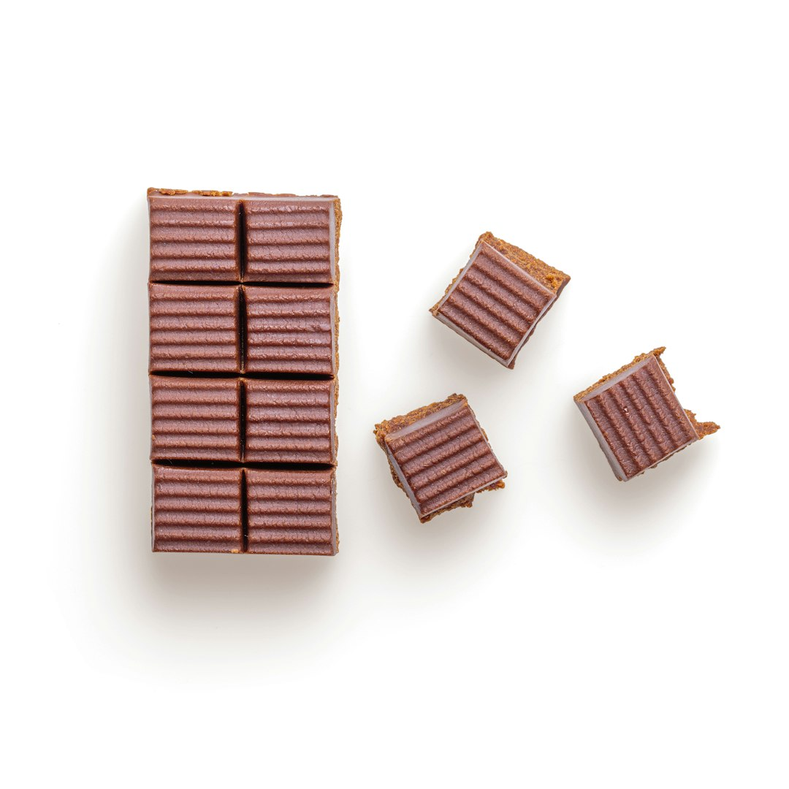
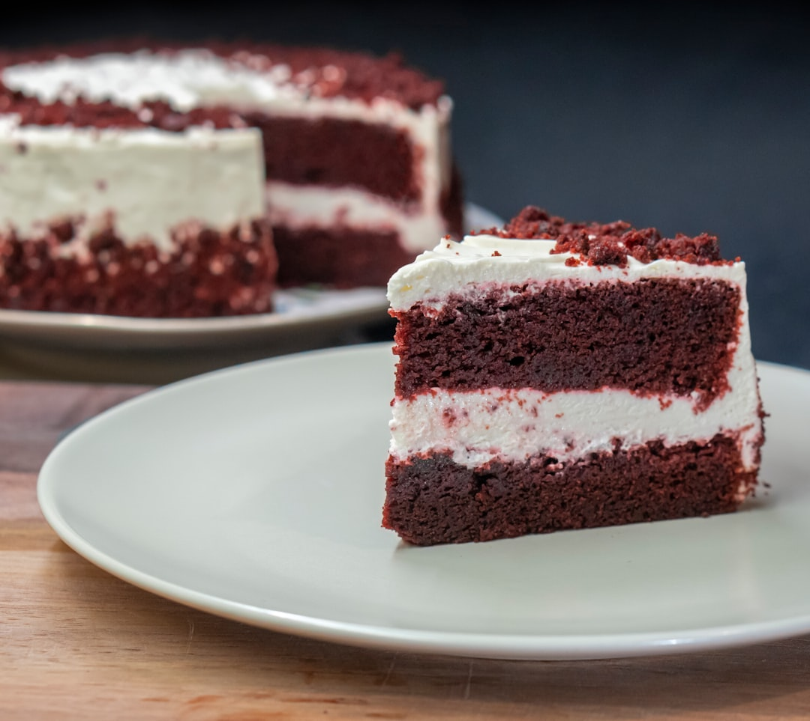
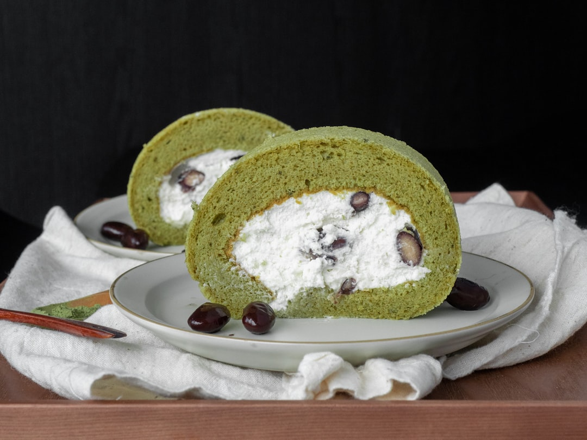

Nossa História
Na Brownie Bliss, acreditamos que o brownie perfeito é mais do que uma simples sobremesa — é uma experiência. Nossa jornada começou em uma pequena cozinha com uma missão simples: criar os brownies artesanais mais irresistíveis, usando apenas os melhores ingredientes.
Cada brownie é feito à mão com chocolate belga premium, ovos frescos de fazenda e extrato puro de baunilha. Nos orgulhamos do nosso processo de cozimento lento, que permite que cada fornada desenvolva sua textura cremosa característica e sabores ricos e complexos.
Da nossa cozinha à sua mesa, dedicamos amor e empenho a cada criação. Cada mordida conta uma história de paixão, qualidade e a arte atemporal de assar com perfeição.

Nossos Produtos
Descubra as nossas variedades de brownies artesanais, cada um elaborado com ingredientes de alta qualidade e muita paixão.

Brownie Clássico
Brownie de chocolate delicioso e cremoso, feito com chocolate belga amargo de alta qualidade.

Amêndua Crocante
Brownie delicioso coberto com amêndoas torradas e um toque de sal marinho.

Cremosidade Máxima
Extremamente cremoso com borda crocante, pura indulgência de chocolate.

Red Velvet
Textura aveludada e suave, com um leve sabor de cacau e de cream cheese.

Bênção de Matcha
Matcha terroso com infusão de chocolate branco para um toque único.

Caramelo Salgado
Brownie gourmet com fios de caramelo salgado e pedaços de chocolate.
O Que Nossos Cientes Falam?
Não acredite apenas na nossa palavra — ouça o que os amantes de brownie que já experimentaram a Brownie Bliss têm a dizer.
"Simplesmente divino! O brownie de caramelo salgado é pura perfeição. Nunca provei nada tão rico e perfeitamente equilibrado."
"A qualidade é incomparável. Cada brownie é uma obra de arte. Minha escolha preferida para ocasiões especiais e presentes!"
"O Brownie Bliss acabou com todos os outros brownies para mim! O Bênção de Matcha é inovador e delicioso. Recomendo muito!"